To open a Picker Window from the Merge Manager, click the left-most of the 4 graphical icons on the left side of the Navigation Bar at the top:
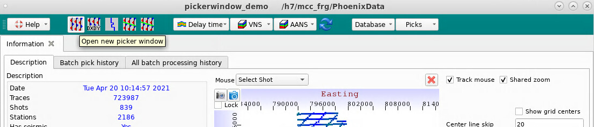
After opening the Picker Window, click on a location on the basemap to bring up a gather:
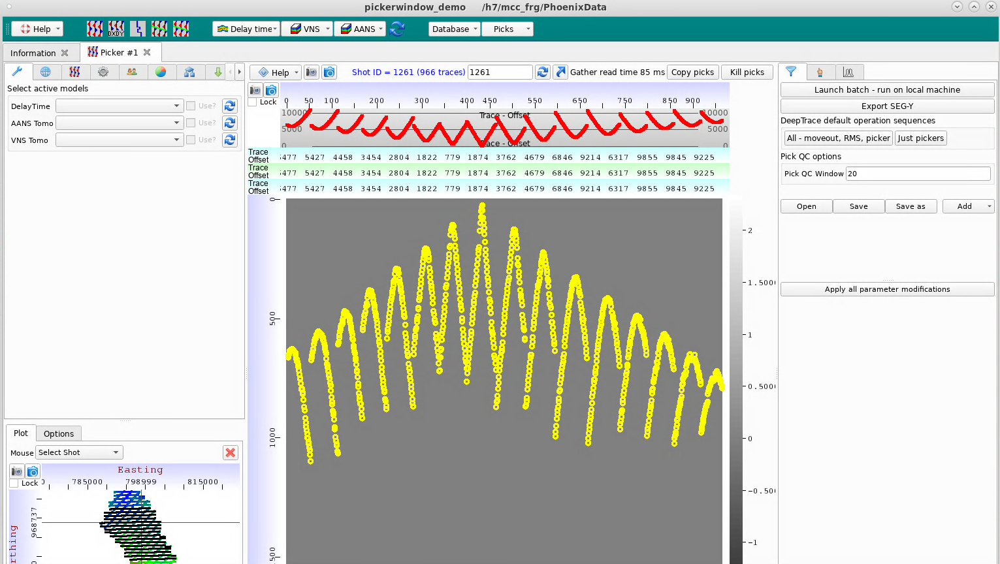
There are 2 ways to control the zoom. The first option is to right-click and drag a box on the trace display, which will zoom both axes into the selected window:
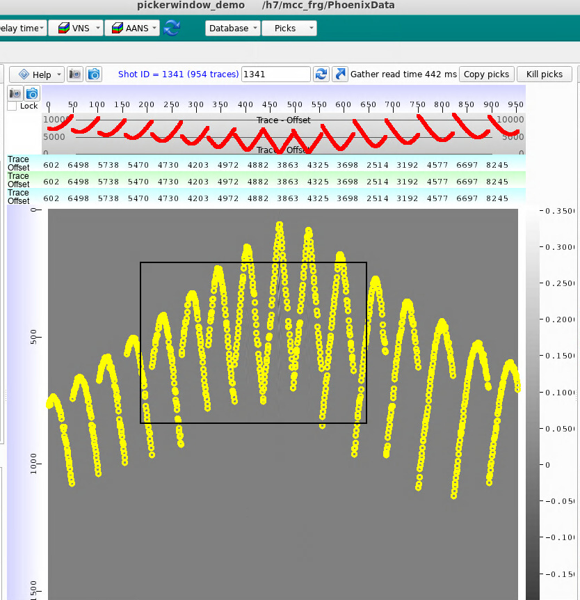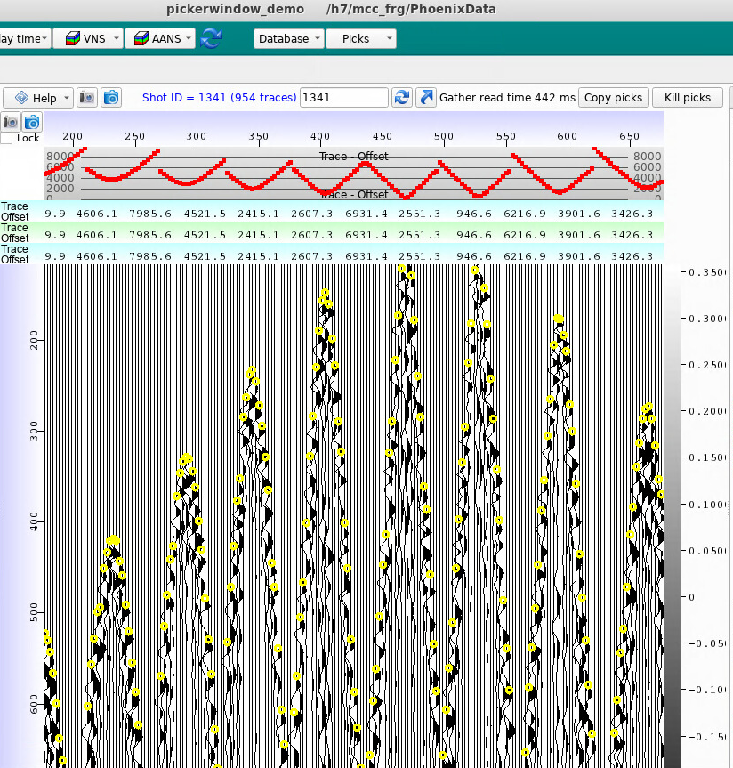
The second option is to left-click and drag along the y-axis (time). This will zoom only the y-axis.
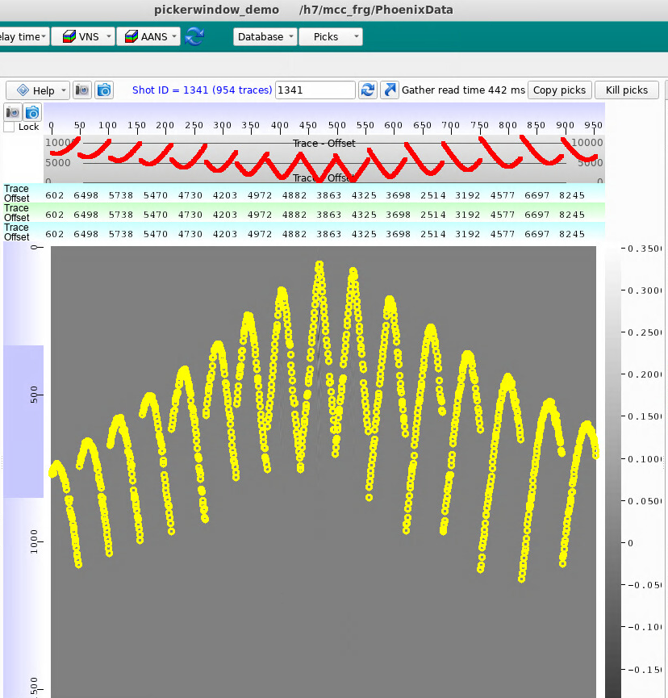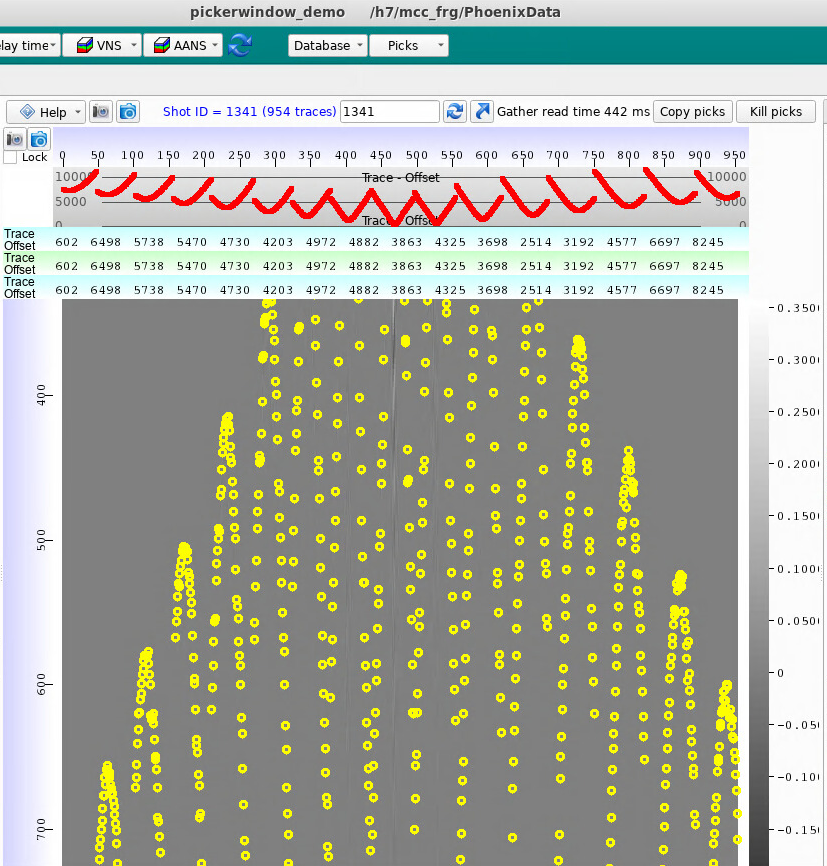
The trace display can be scrolled horizontally by spinning the wheel on your mouse, if there is one.
The menu tabs on the left side of the Picker Window control the trace display.
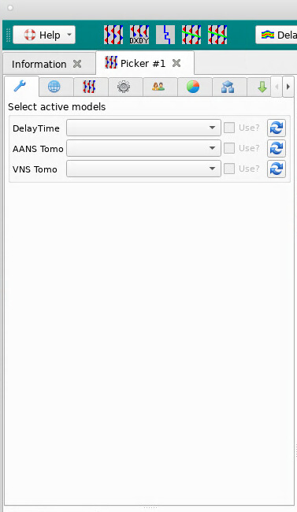
Delay Time, AANS, and VNS models may be applied here to shift (flatten) the traces. Check the box next to each model to turn the shift on or off. Click the refresh button to reload the list of models for that model type.
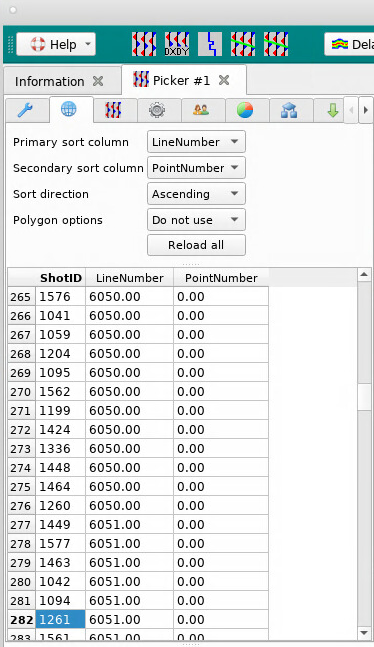
The navigation order of gathers can be set here. The table display shows the current gather location in the navigation order. Click on any row to load that gather in the main Picker display.
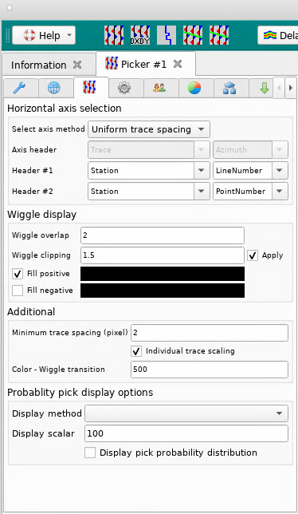
You may change the trace spacing, wiggle display options, and other trace display options here.
This tab is used to lock the time axis. It also controls the number of header and footer plots.
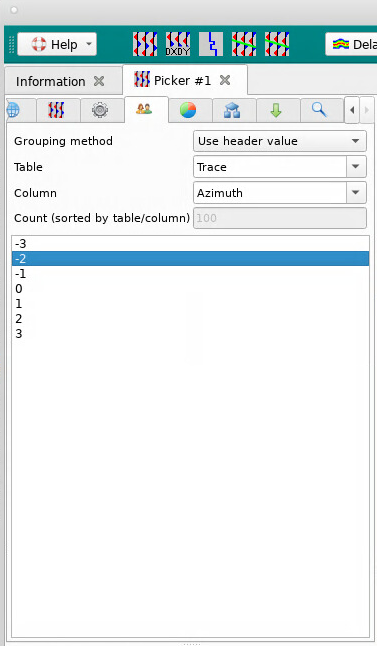
Grouping is off by default, but can be set here. This also contains the navigation display for groups. Click on a group to load those traces in the main Picker display.
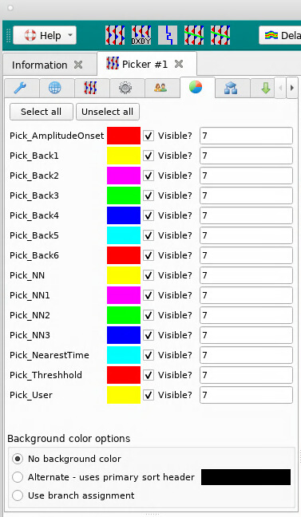
Set which Pick versions are visible, and select the color and size of the displayed Picks. Note that some of these are used to store autopicks - Pick_AmplitudeOnset, Pick_NearestTime, and Pick_Threshhold. Additionally, the Pick_NN versions are meant to be used with DeepTrace.
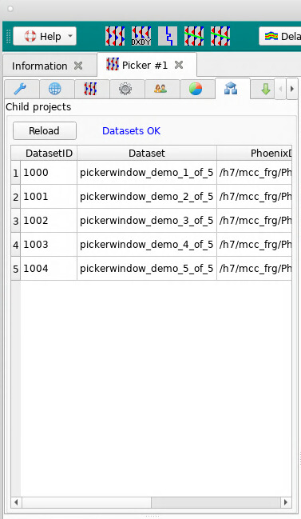
This shows the Datasets that comprise the Merge, along with the disk location of the Datasets. Any issues accessing the Datasets will be visible here.
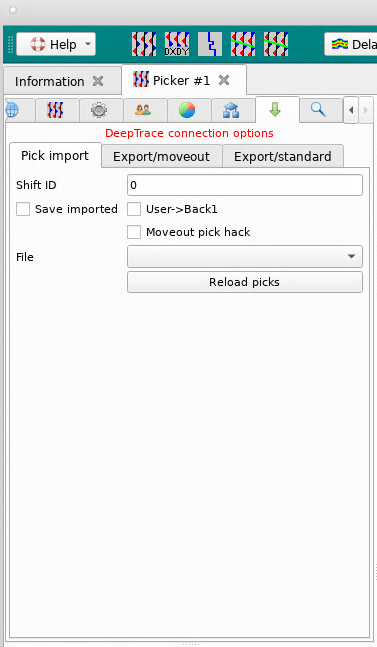
This shows options related to DeepTrace neural net picking. For more information, please refer to the DeepTrace documentation.
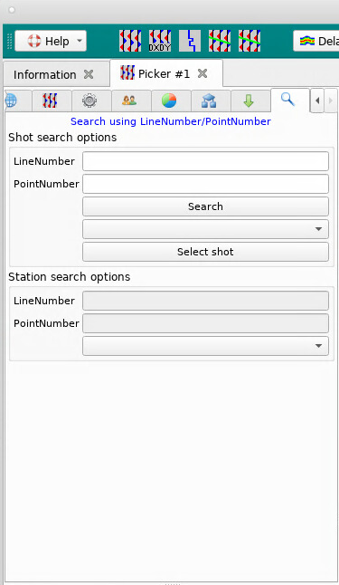
This may be used to search for a Shot or Station using Line Number and Point Number.
The menu tabs on the right side of the Picker Window control Picking functionality.
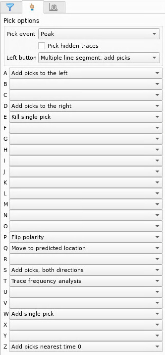
Select whether the manual and auto pickers snap to peaks, troughs, or not at all. Select whether hidden traces should be picked by the manual picker.
Set the left mouse click functionality - the default is “Multiple line segment, add picks” which is the recommended option.
Set the keyboard bindings for all other Picker functionality.
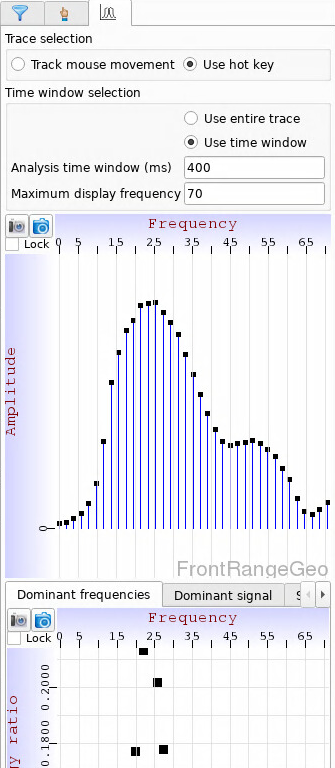
This may be used to perform spectral analysis on trace samples. It may be set up to either track the trace under the mouse cursor, or to use a hotkey. If using a hotkey, the “Trace frequency analysis” option must be assigned to a key.